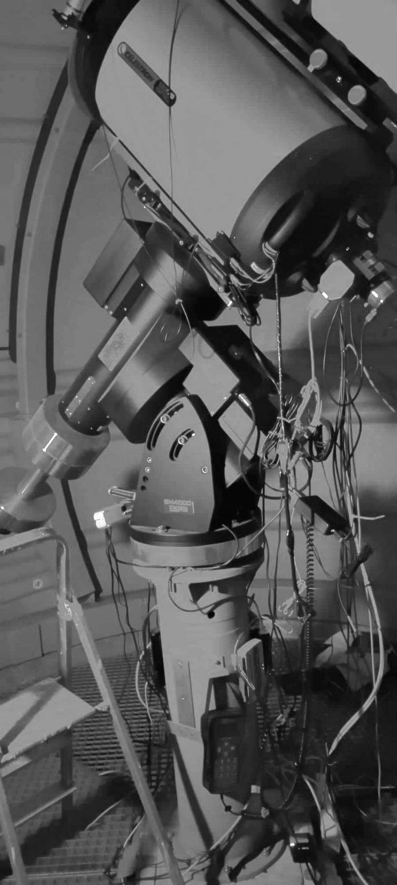

From 2017 to 2020, I have taught various college courses at Université Paris Cité, for a total of 220 hours (ETD). You can find out details in my CV.
Most notably, I have been in charge of creating astronomical observation teachings for bachelor students in 2019-2020.
Since 2016, I was involved in the development of the Diderot Little Telescope (DLT), a remote-controlled observatory on the rooftops of Université Paris Cité.
The automated cupola shelters a 10Micron GM4000 mount holding a Celestron C14 edge-HD as well as a 150mm LZOS apochromatic refractor.
Using various CCD and CMOS cameras, a Shelyak LHIRES III and density solar filters, I equiped the observatory in order to perform live imaging and spectroscopy of the Sun.
Students were proposed four, custom-made projects that made use of the DLT (see a glimpse of their work below):
Limb-darkening law
Imaging, measuring the evolution of the luminosity of the disk.
Solar chromosphere
Spectroscopy, measuring the evolution of the Halpha line across the edge of the disk.
Effective temperature
Spectroscopy, fitting black body emission to full the full optical spectrum.
Granulation
Imaging, high-resolution lucky-imaging and Fourrier transform to get granule size distribution.